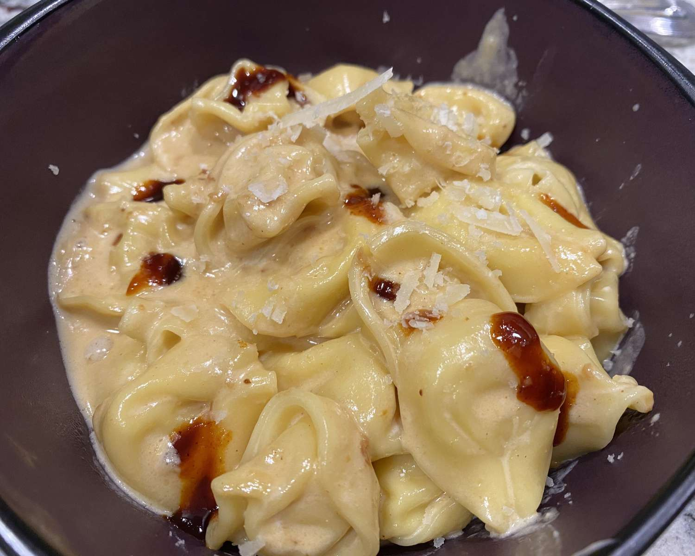

Pasta Recipe

Description
This is traditional itallian dish
This is how you can ake it easily at Home.
Ingredients:
- 1 (20 ounce) package refrigerated cheese tortellini
- ¼ cup unsalted butter
- 2 tablespoons unsalted butter
- 2 cloves garlic, minced
- 3 tablespoons white miso paste
- ⅓ cup heavy whipping cream
- 4 ounces freshly grated Parmesan cheese
- 2 tablespoons gochujang (Korean hot pepper paste), divided
- 1 cup reserved pasta water
Steps:
- Fill a large pot with lightly salted water and bring to a rolling boil
over high heat;
stir in tortellini (in batches if necessary) and return to a boil.
Cook uncovered, stirring occasionally,
until the tortellini float to the top and the filling is hot,
about 3 minutes.
- Scoop tortellini into a bowl with a slotted spoon.
Drain water,
reserving 1 cup of pasta water.
- Meanwhile, melt butter in the same pot over medium heat.
Add minced garlic and sauté until fragrant,
30 to 45 seconds. Stir in miso, cream, and pasta water.
Whisk continuously until miso dissolves.
Add 1 tablespoon gochujang sauce and stir to combine.
- Add tortellini and Parmesan cheese,
stirring briskly until cheese is blended in and sauce is smooth.
- Garnish each serving with a bit of remaining gochujang sauce